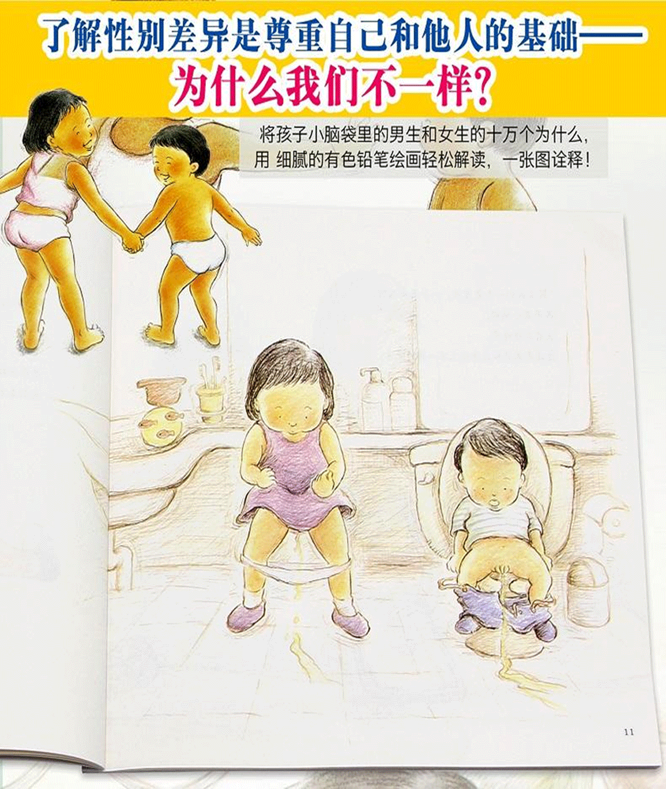

首页 >> 电子书 >> 儿童性教育

字号
放大A+
缩小A-
- 首页
- 上一页
- <
- …
- >
- 下一页
- 尾页
分享到:
 QQ好友和群
QQ好友和群
 QQ空间
QQ空间
 腾讯微博
腾讯微博
 微信朋友
微信朋友
- 最新上传
- ◆ 中国性科学研究探源182
- ◆ 向世界展示中华性文化182
- ◆ 现代女性性爱意识的觉醒182
- ◆ 儒家与道家性哲学观念之比较182
- ◆ 古代城市中的同性恋 182
- ◆ 读《聊斋志异》看我国同性性行为182
- ◆ “娼”与“倡”的衍变182
- ◆ 中国性科学研究探源182
- 性生物学
- ◆ 中国性科学研究探源
- ◆ 向世界展示中华性文化
- ◆ 现代女性性爱意识的觉醒
- ◆ 儒家与道家性哲学观念之比较
- ◆ 古代城市中的同性恋
- ◆ 读《聊斋志异》看我国同性性行为
- ◆ “娼”与“倡”的衍变
- ◆ 中国性科学研究探源
- 性心理学
- ◆ 中国性科学研究探源
- ◆ 向世界展示中华性文化
- ◆ 现代女性性爱意识的觉醒
- ◆ 儒家与道家性哲学观念之比较
- ◆ 古代城市中的同性恋
- ◆ 读《聊斋志异》看我国同性性行为
- ◆ “娼”与“倡”的衍变
- ◆ 中国性科学研究探源
- 性社会学
- ◆ 中国性科学研究探源
- ◆ 向世界展示中华性文化
- ◆ 现代女性性爱意识的觉醒
- ◆ 儒家与道家性哲学观念之比较
- ◆ 古代城市中的同性恋
- ◆ 读《聊斋志异》看我国同性性行为
- ◆ “娼”与“倡”的衍变
- ◆ 中国性科学研究探源
- 性健康学
- ◆ 中国性科学研究探源
- ◆ 向世界展示中华性文化
- ◆ 现代女性性爱意识的觉醒
- ◆ 儒家与道家性哲学观念之比较
- ◆ 古代城市中的同性恋
- ◆ 读《聊斋志异》看我国同性性行为
- ◆ “娼”与“倡”的衍变
- ◆ 中国性科学研究探源
关注公众号
手机网站
重庆思无邪网络科技有限公司 版权所有
渝ICP备005665656号 渝公安备 50019002501739
渝公安备 50019002501739
All Rights Reserved, Copyright 2019-2020